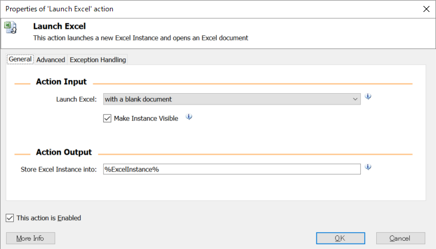

-
チュートリアル（基礎）
- RPA、RDAとは
- WinAutomationとは
- セットアップ手順
- コンソールの操作方法
- Task1 コンソールを操作してみましょう
- ProcessDesignerの操作方法
- 基本アクションについて
- Task2 アクションを設定してみましょう
- トリガー設定
- Task3 トリガーを作成してみましょう
- スケジューラー設定
- Task4 スケジューラーを作成してみましょう
- EXCEL操作
- Task5 EXCELを操作してみましょう
- マクロレコーダー
- Task6 アプリケーションを操作してみましょう
- Webレコーダー
- Task7 Webサイトを操作してみましょう
- 画像認識
- Task8 画像認識で処理を作成してみましょう
- 例外処理
- アクション一覧
- サンプル
- FAQ
- トラブルシューティング
EXCEL操作
これまでは基礎的な部分が大きかったですが、RPAらしく他のアプリケーションを操作していきましょう。 まずは、業務には欠かせないEXCELの操作を行いたいと思います。
EXCELのデータ構造
普段意識することはありませんが、EXCELは縦と横の2次元データから構成されています。
2次元データというと少し複雑に感じますが、「A1」であれば「A列の1行目」というように、理解することができると思います。
WinAutomationでは、EXCELデータを取り込むと、DataTableという形式に変換され、「%ExcelData[0][0]%」というような式でアクセスします。
1番目のインデックスが「行」、2番目のインデックスが「列」を表しており、読み込む前のEXCELは1から、WinAutomationに読み込んだ後は0からスタートするため、注意しましょう。
EXCELの起動
Launch Excelアクションを使用することで、EXCELを起動することができます。
プロセスデザイナーを起動し、Launch Excelアクションを配置します。 
そのままOKボタンを押し、実行を行います。
空のEXCELが起動することを確認します。
次に先ほど設定したLaunch Excelアクションを編集し、すでに作成されているファイルを開いてみましょう。
既存ファイルを開く場合はLauch Excel項目で「and open the dollowing document」を選択し、Document Path項目に開きたいEXCELファイルのパスを指定します。
再度実行を行い、EXCELファイルが起動することを確認してください。
Make Instance Visibleのチェックを外すと、EXCELの画面が表示されなくなる代わりに、処理が若干早くなります。 ただし、エラーが発生した場合に、通常の操作ではEXCELを閉じれなくなるため、基本的には表示させておくのが無難です。
EXCELへの書き込み
EXCELへの書き込みには、Write to Excel Worksheetアクションを使用します。
プロセスデザイナーを起動し、Launch Excelアクションを配置、空のEXCELを起動するように設定します。
Write to Excel Worksheetアクションを配置し、Excel Instanceに上記で設定したEXCELのインスタンスを設定します。
インスタンスとは、複数のEXCELを起動している場合に、どのEXCELを操作するのかを判断するために、WinAutomationが生成する名札のようなものです。以下のように各項目を設定します。
実行を行い、EXCELのA1セルに「Hello Excel」が表示されることを確認します。
Column項目にはA、ABのようにEXCELの列名を設定することも可能です。
EXCELの読み込み
EXCELへの読み込みには、Read from Excel Worksheetアクションを使用します。
プロセスデザイナーを起動し、Launch Excelアクションを配置、下記EXCELファイルを起動するように設定します。
サンプル領収書.xlsx DownloadRead from Excel Worksheetアクションを配置し、Excel Instanceに上記で設定したEXCELのインスタンスを設定します。
以下のように各項目を設定します。
実行を行い、変数の値を確認します。
複数行の読み込み
EXCELへの読み込みには、Read from Excel Worksheetアクションを使用します。
プロセスデザイナーを起動し、Launch Excelアクションを配置、下記EXCELファイルを起動するように設定します。
Get First Free Columnアクションを配置します。
このアクションを使用することで、列や行数が変わっても、プロセスを修正することなく、処理することが可能となります。Read from Excel Worksheetアクションを配置し、Excel Instanceに上記で設定したEXCELのインスタンスを設定します。
以下のように各項目を設定します。
実行を行い、変数の値を確認します。
Get First Free Columnでは、末端の空白の行番号、列番号を返します。 そのため、結果のように、行と列の最後に空白の箇所が出てしまいます。 これを回避するには「%FirstFreeColumn - 1%」のように、番号を1つ前に設定する必要があります。
Read from Excel WorksheetアクションのAdvancedタブで「First line of range contains column names]にチェックを入れると、先頭行を列名として設定することが可能になります。
シートの選択
上記アクションで実行されるシートは、最後に保存する前に表示されていたシートとなります。
そのため複数シートが存在するようなEXCELでは、本来処理したいシートではなく、誤ったシートで処理が行われる可能性があります。
EXCEL操作を行う場合には、Set Active Excel Worksheetアクションを使用して、シートを選択するようにするのがよいでしょう。
EXCELの保存と終了
作成したEXCELを保存するには、Save Excelアクションを使用します。
またEXCELを終了する場合には、Close Excelアクションを使用します。
Close Excelアクションでも保存を行うことができるため、保存と終了を同時に行う場合には、Close Excelアクションのみで処理することが可能です。